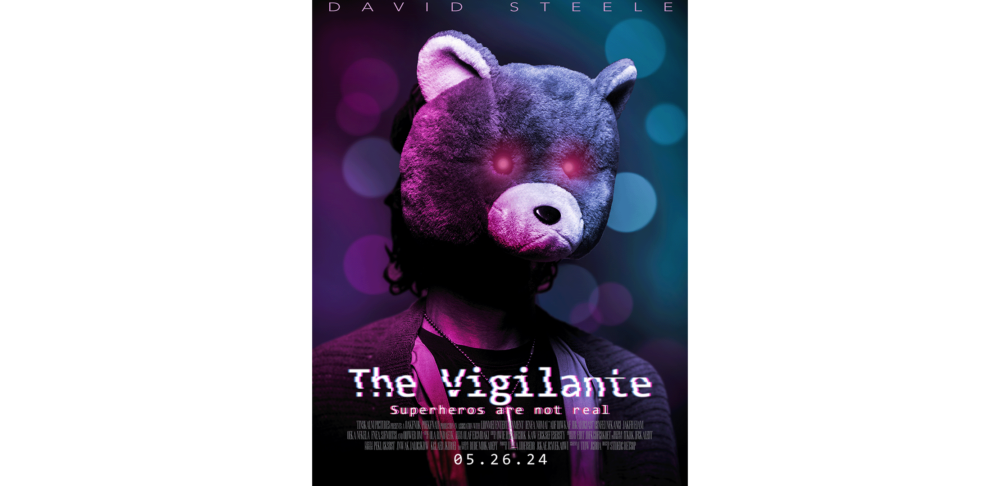
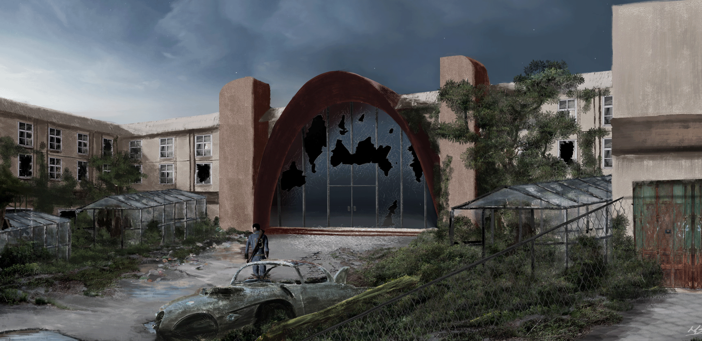
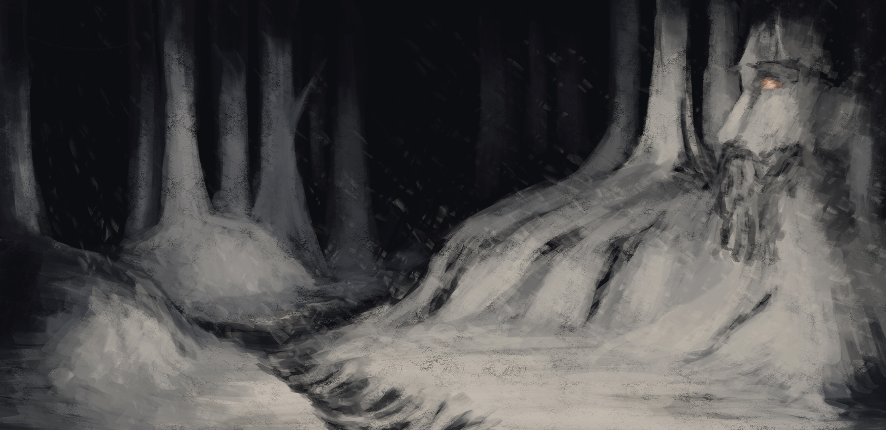
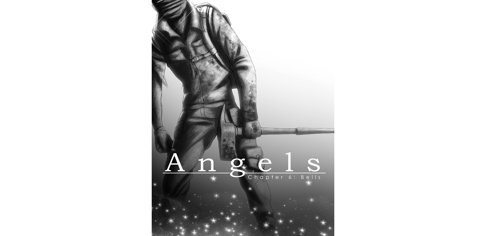
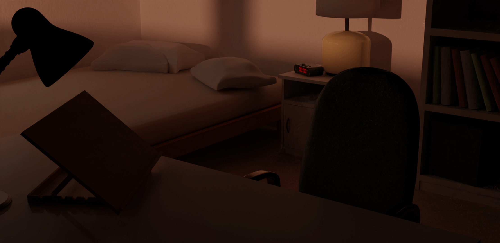
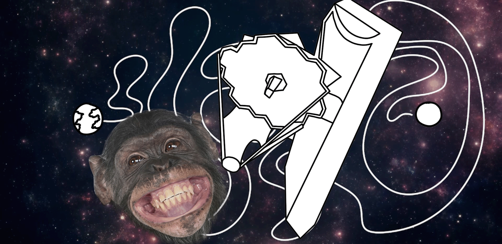
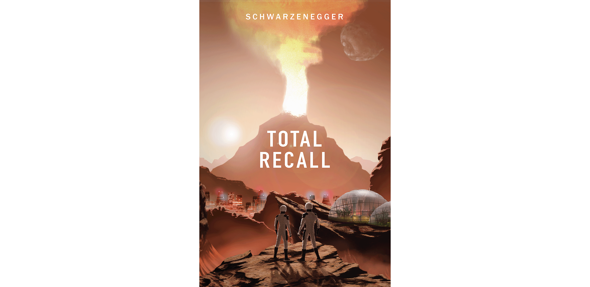
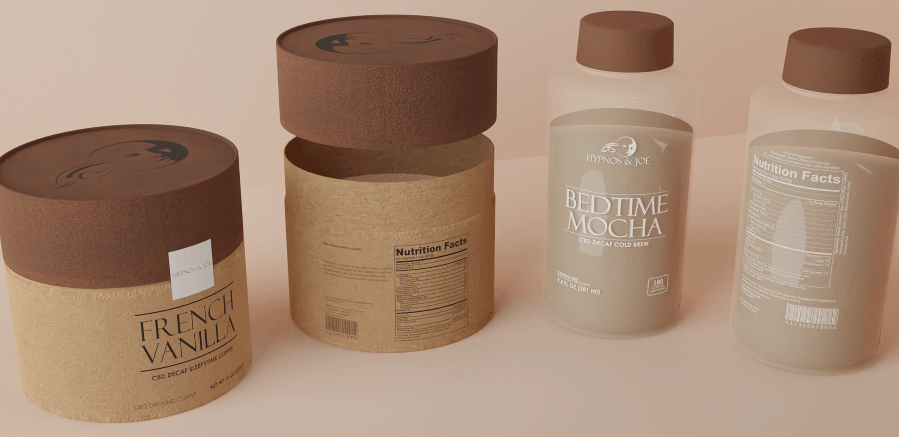
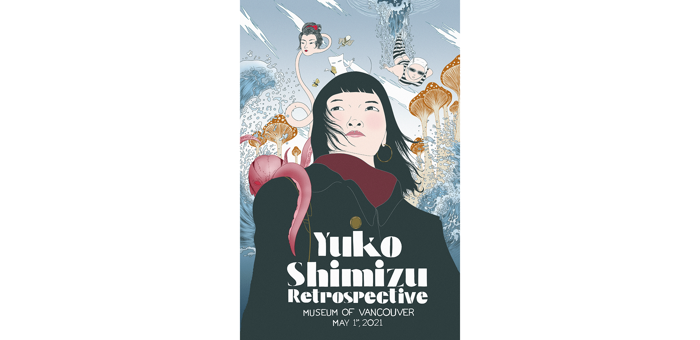

Harlen Bertrand
I draw, paint, code, do silly voices, and ride a motorcycle when I have free time! Hence, the leather jacket. Pretty nifty, innit?

Project Fire
Project Fire tells the story of a Knight tasked to find a prince who has run away from his royal roots in search of a legendary treasure that is said to grant the user any wish that they want.

Vigilance
Vigilance tells the story of a private investigator who is investigating a mysterious superhuman responisble for strange events throughout the city.

Project Arroyo
Fallout: Project Arroyo is a fan recreation of Fallout 2 in the Fallout 4 game engine using updated graphics, mechanics, and story telling.

The Children of the Tree
The Children of the Tree is a hypothetical video game that tells the story of a fisherman caught up in a world of dreams who is searching for their lost family.

Angels
Two people connected by fate are forced into a world filled with a deadly mist to discover the origins behind myserious lights in the sky and glowing beings.

Design Student Life Animation
The design student life is a silly animation that is meant to give a glimpse into what I experienced as a design student and trying to find a balance in work and life.

James Webb Telescope
The James Webb Telescope was launched on Christmas Day, 2021 marking a momentous occasion in the scientific field.

Total Recall Movie Poster
Total Recall tells the story of Douglas Quiad. A lowly construction worker who becomes the victim of an interplanetary conspiracy that thrusts him into a fight for survival.

Coffee Mockup
This hypothetical coffee brand, named Hypnos & Joe, is a CBD infused sleepytime drink that is meant to do the exact opposite of what Coffee is meant to do.
